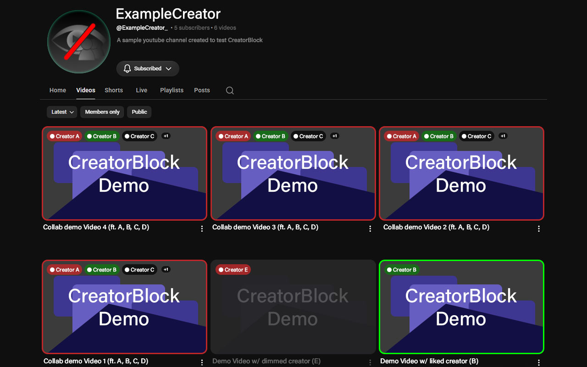
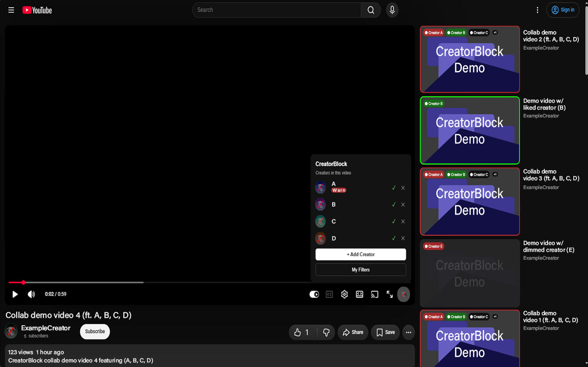
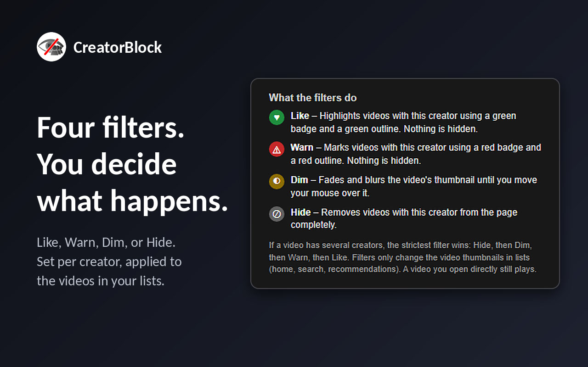

CreatorBlock
See who appears in a YouTube video before you watch it, and choose what happens to videos with creators you like or dislike.
Free. The Chrome version also works in Brave, Edge, and Opera.
What it does
People in the community tag which creators appear in a video. Those creators show up as small badges on thumbnails, and your own filters decide what happens to their videos.
LikeGreen badge and outline. Nothing is hidden.
WarnRed badge and outline. Nothing is hidden.
DimThe thumbnail fades and blurs until you hover over it.
HideThe video is removed from the list.
Filters only change thumbnails in lists (home, search, recommendations). A video you open directly always plays.
Screenshots



How to use it
- Browse YouTube as usual. Badges appear on videos the community has tagged.
- Add creators to My Filters from the toolbar popup and pick Like, Warn, Dim, or Hide.
- Use the CreatorBlock button in the video player to tag who's in a video, confirm a tag (✓), or dispute one (✕).
Privacy
No accounts and no tracking. Your filters stay in your browser, and the extension doesn't send the IDs of the videos you see. Read the full privacy policy.
Support the project
CreatorBlock is free. If you find it useful, you can chip in toward its development.